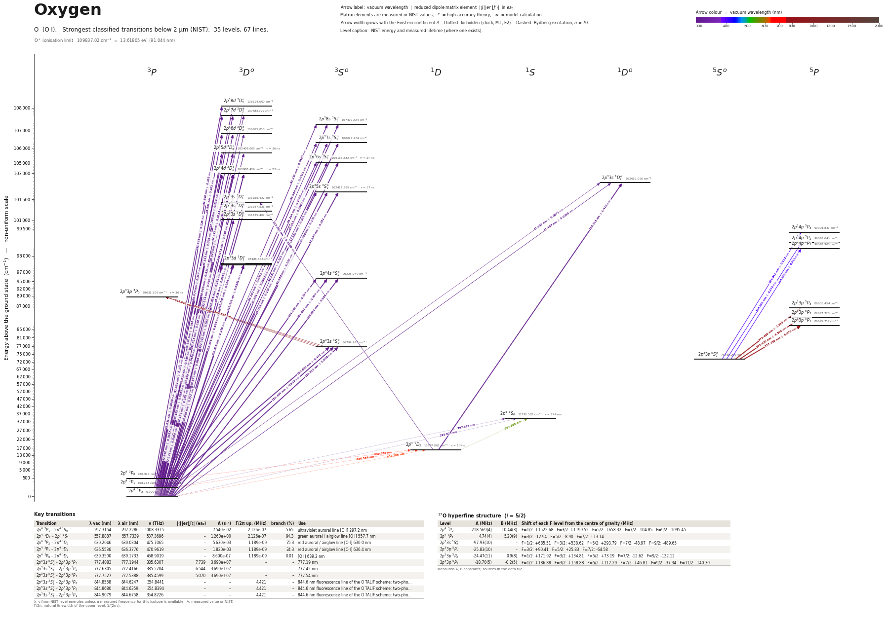

Oxygen energy level diagram
Energy levels and transitions of neutral oxygen (O I): the 67 strongest classified lines below 2 µm from the NIST Atomic Spectra Database and the 35 levels they connect, each line with its vacuum wavelength, frequency and, for 58 of them, the reduced dipole matrix element derived from the NIST transition rate. Measured lifetimes, transition rates, hyperfine constants and isotope shifts from the literature are included, each with its citation.
Hover a line or a level to isolate it, click to keep it selected. Scroll to zoom, drag to move.

Download: diagram (PDF) diagram (SVG) transitions (CSV) levels (CSV) source code

Key transitions of oxygen
| Transition | λ vac (nm) | λ air (nm) | ν (THz) | |⟨J‖er‖J′⟩| (ea₀) | A (s⁻¹) | Γ/2π up. (MHz) | branch (%) | Use |
|---|---|---|---|---|---|---|---|---|
| 2p4 3P1 – 2p4 1S0 | 297.3154 | 297.2286 | 1008.3315 | – | 7.540e-02 | 2.126e-07 | 5.65 | ultraviolet auroral line [O I] 297.2 nm |
| 2p4 1D2 – 2p4 1S0 | 557.8887 | 557.7339 | 537.3696 | – | 1.260e+00 | 2.126e-07 | 94.3 | green auroral / airglow line [O I] 557.7 nm |
| 2p4 3P2 – 2p4 1D2 | 630.2046 | 630.0304 | 475.7065 | – | 5.630e-03 | 1.189e-09 | 75.3 | red auroral / airglow line [O I] 630.0 nm |
| 2p4 3P1 – 2p4 1D2 | 636.5536 | 636.3776 | 470.9619 | – | 1.820e-03 | 1.189e-09 | 24.3 | red auroral / airglow line [O I] 636.4 nm |
| 2p4 3P0 – 2p4 1D2 | 639.3500 | 639.1733 | 468.9019 | – | 8.600e-07 | 1.189e-09 | 0.01 | [O I] 639.2 nm |
| 2p33s 5S°2 – 2p33p 5P3 | 777.4083 | 777.1944 | 385.6307 | 7.739 | 3.690e+07 | – | – | 777.19 nm |
| 2p33s 5S°2 – 2p33p 5P2 | 777.6305 | 777.4166 | 385.5204 | 6.544 | 3.690e+07 | – | – | 777.42 nm |
| 2p33s 5S°2 – 2p33p 5P1 | 777.7527 | 777.5388 | 385.4599 | 5.070 | 3.690e+07 | – | – | 777.54 nm |
| 2p33s 3S°1 – 2p33p 3P0 | 844.8568 | 844.6247 | 354.8441 | – | – | 4.421 | – | 844.6 nm fluorescence line of the O TALIF scheme: two-pho… |
| 2p33s 3S°1 – 2p33p 3P2 | 844.8680 | 844.6359 | 354.8394 | – | – | 4.421 | – | 844.6 nm fluorescence line of the O TALIF scheme: two-pho… |
| 2p33s 3S°1 – 2p33p 3P1 | 844.9079 | 844.6758 | 354.8226 | – | – | 4.421 | – | 844.6 nm fluorescence line of the O TALIF scheme: two-pho… |
λ, ν from NIST level energies unless a measured frequency for this isotope is available. A: measured value or NIST. Γ/2π: natural linewidth of the upper level, 1/(2πτ).
17O hyperfine structure (I = 5/2)
| Level | A (MHz) | B (MHz) | Shift of each F level from the centre of gravity (MHz) |
|---|---|---|---|
| 2p4 3P2 | -218.569(4) | -10.44(3) | F=1/2: +1522.68 F=3/2: +1199.52 F=5/2: +658.32 F=7/2: -104.85 F=9/2: -1095.45 |
| 2p4 3P1 | 4.74(4) | 5.20(9) | F=3/2: -12.94 F=5/2: -8.90 F=7/2: +13.14 |
| 2p33s 5S°2 | -97.93(10) | – | F=1/2: +685.51 F=3/2: +538.62 F=5/2: +293.79 F=7/2: -48.97 F=9/2: -489.65 |
| 2p33p 5P1 | -25.83(10) | – | F=3/2: +90.41 F=5/2: +25.83 F=7/2: -64.58 |
| 2p33p 5P2 | -24.47(11) | 0.9(8) | F=1/2: +171.92 F=3/2: +134.81 F=5/2: +73.19 F=7/2: -12.62 F=9/2: -122.12 |
| 2p33p 5P3 | -18.70(5) | -0.2(5) | F=1/2: +186.88 F=3/2: +158.88 F=5/2: +112.20 F=7/2: +46.81 F=9/2: -37.34 F=11/2: -140.30 |
Measured A, B constants; sources in the data file.
Listed O transitions below 2 µm
| Lower level | Upper level | λ vacuum (nm) | λ air (nm) | ν (THz) | Type | |⟨J‖er‖J′⟩| (ea₀) | A (s⁻¹) | Branching (%) | Source of matrix element / A |
|---|---|---|---|---|---|---|---|---|---|
| 2p4 3P2 | 2p38d 3D°3 | 92.4950 | – | 3241.1762 | E1 | 0.0234 NIST | 2.010e+05 NIST | – | NIST ASD (accuracy D) |
| 2p4 3P1 | 2p38d 3D°3 | 92.6306 | – | 3236.4315 | E1 | 0.0908 NIST | 3.000e+06 NIST | – | NIST ASD (accuracy C) |
| 2p4 3P0 | 2p38d 3D°3 | 92.6896 | – | 3234.3716 | E1 | 0.105 NIST | 3.990e+06 NIST | – | NIST ASD (accuracy C) |
| 2p4 3P2 | 2p37d 3D°3 | 92.9517 | – | 3225.2505 | E1 | 0.0287 NIST | 2.960e+05 NIST | – | NIST ASD (accuracy D) |
| 2p4 3P2 | 2p38s 3S°1 | 93.0257 | – | 3222.6857 | E1 | 0.0907 NIST | 6.900e+06 NIST | – | NIST ASD (accuracy C) |
| 2p4 3P1 | 2p37d 3D°3 | 93.0886 | – | 3220.5059 | E1 | 0.111 NIST | 4.420e+06 NIST | – | NIST ASD (accuracy C) |
| 2p4 3P0 | 2p37d 3D°3 | 93.1482 | – | 3218.4459 | E1 | 0.128 NIST | 5.880e+06 NIST | – | NIST ASD (accuracy C) |
| 2p4 3P1 | 2p38s 3S°1 | 93.1628 | – | 3217.9410 | E1 | 0.0702 NIST | 4.120e+06 NIST | – | NIST ASD (accuracy C) |
| 2p4 3P0 | 2p38s 3S°1 | 93.2225 | – | 3215.8811 | E1 | 0.0405 NIST | 1.370e+06 NIST | – | NIST ASD (accuracy D) |
| 2p4 3P2 | 2p36d 3D°3 | 93.6629 | – | 3200.7582 | E1 | 0.0362 NIST | 4.610e+05 NIST | – | NIST ASD (accuracy D) |
| 2p4 3P2 | 2p37s 3S°1 | 93.7841 | – | 3196.6250 | E1 | 0.116 NIST | 1.110e+07 NIST | – | NIST ASD (accuracy C) |
| 2p4 3P1 | 2p36d 3D°3 | 93.8020 | – | 3196.0136 | E1 | 0.140 NIST | 6.880e+06 NIST | – | NIST ASD (accuracy C) |
| 2p4 3P0 | 2p36d 3D°3 | 93.8625 | – | 3193.9536 | E1 | 0.162 NIST | 9.160e+06 NIST | – | NIST ASD (accuracy C) |
| 2p4 3P1 | 2p37s 3S°1 | 93.9235 | – | 3191.8804 | E1 | 0.0902 NIST | 6.630e+06 NIST | – | NIST ASD (accuracy C) |
| 2p4 3P0 | 2p37s 3S°1 | 93.9841 | – | 3189.8204 | E1 | 0.0521 NIST | 2.210e+06 NIST | – | NIST ASD (accuracy D) |
| 2p4 3P2 | 2p35d 3D°3 | 94.8686 | – | 3160.0826 | E1 | 0.048 NIST | 7.800e+05 NIST | 2.81 | NIST ASD (accuracy D) |
| 2p4 3P1 | 2p35d 3D°3 | 95.0112 | – | 3155.3379 | E1 | 0.185 NIST | 1.160e+07 NIST | 41.8 | NIST ASD (accuracy C) |
| 2p4 3P0 | 2p35d 3D°3 | 95.0733 | – | 3153.2780 | E1 | 0.214 NIST | 1.550e+07 NIST | 55.8 | NIST ASD (accuracy C) |
| 2p4 3P2 | 2p36s 3S°1 | 95.0885 | – | 3152.7743 | E1 | 0.157 NIST | 1.940e+07 NIST | 46.6 | NIST ASD (accuracy C) |
| 2p4 3P1 | 2p36s 3S°1 | 95.2318 | – | 3148.0297 | E1 | 0.122 NIST | 1.160e+07 NIST | 27.8 | NIST ASD (accuracy C) |
| 2p4 3P0 | 2p36s 3S°1 | 95.2941 | – | 3145.9697 | E1 | 0.0702 NIST | 3.850e+06 NIST | 9.24 | NIST ASD (accuracy C) |
| 2p4 3P2 | 2p34d 3D°1 | 97.1737 | – | 3085.1189 | E1 | 0.0469 NIST | 1.620e+06 NIST | 3.73 | NIST ASD (accuracy C+) |
| 2p4 3P2 | 2p34d 3D°3 | 97.1738 | – | 3085.1154 | E1 | 0.431 NIST | 5.850e+07 NIST | 100 | NIST ASD (accuracy C+) |
| 2p4 3P2 | 2p34d 3D°2 | 97.1738 | – | 3085.1175 | E1 | 0.182 NIST | 1.460e+07 NIST | 33.6 | NIST ASD (accuracy C+) |
| 2p4 3P1 | 2p34d 3D°2 | 97.3234 | – | 3080.3728 | E1 | 0.315 NIST | 4.370e+07 NIST | 100 | NIST ASD (accuracy C+) |
| 2p4 3P1 | 2p34d 3D°1 | 97.3234 | – | 3080.3742 | E1 | 0.182 NIST | 2.420e+07 NIST | 55.7 | NIST ASD (accuracy C+) |
| 2p4 3P0 | 2p34d 3D°1 | 97.3885 | – | 3078.3143 | E1 | 0.210 NIST | 3.230e+07 NIST | 74.3 | NIST ASD (accuracy C+) |
| 2p4 3P2 | 2p33s 1D°2 | 97.4070 | – | 3077.7301 | E1 (intercombination) | 0.0158 NIST | 1.100e+05 NIST | – | NIST ASD (accuracy C) |
| 2p4 3P1 | 2p33s 1D°2 | 97.5574 | – | 3072.9855 | E1 (intercombination) | 0.00713 NIST | 2.220e+04 NIST | – | NIST ASD (accuracy C) |
| 2p4 3P2 | 2p35s 3S°1 | 97.6448 | – | 3070.2344 | E1 | 0.231 NIST | 3.860e+07 NIST | 65.6 | NIST ASD (accuracy C+) |
| 2p4 3P1 | 2p35s 3S°1 | 97.7959 | – | 3065.4897 | E1 | 0.178 NIST | 2.300e+07 NIST | 39.1 | NIST ASD (accuracy C+) |
| 2p4 3P0 | 2p35s 3S°1 | 97.8617 | – | 3063.4298 | E1 | 0.103 NIST | 7.660e+06 NIST | 13 | NIST ASD (accuracy C) |
| 2p4 3P2 | 2p33s 3D°1 | 98.8578 | – | 3032.5633 | E1 | 0.0962 NIST | 6.470e+06 NIST | – | NIST ASD (accuracy B) |
| 2p4 3P2 | 2p33s 3D°2 | 98.8655 | – | 3032.3265 | E1 | 0.371 NIST | 5.770e+07 NIST | – | NIST ASD (accuracy B) |
| 2p4 3P2 | 2p33s 3D°3 | 98.8773 | – | 3031.9632 | E1 | 0.869 NIST | 2.260e+08 NIST | – | NIST ASD (accuracy B) |
| 2p4 3P1 | 2p33s 3D°1 | 99.0127 | – | 3027.8186 | E1 | 0.369 NIST | 9.470e+07 NIST | – | NIST ASD (accuracy B) |
| 2p4 3P1 | 2p33s 3D°2 | 99.0204 | – | 3027.5819 | E1 | 0.634 NIST | 1.680e+08 NIST | – | NIST ASD (accuracy B) |
| 2p4 3P0 | 2p33s 3D°1 | 99.0801 | – | 3025.7587 | E1 | 0.424 NIST | 1.250e+08 NIST | – | NIST ASD (accuracy B) |
| 2p4 3P2 | 2p33d 3D°3 | 102.5762 | – | 2922.6328 | E1 | 0.534 NIST | 7.660e+07 NIST | – | NIST ASD (accuracy B) |
| 2p4 3P2 | 2p33d 3D°2 | 102.5763 | – | 2922.6301 | E1 | 0.226 NIST | 1.910e+07 NIST | – | NIST ASD (accuracy B) |
| 2p4 3P2 | 2p33d 3D°1 | 102.5763 | – | 2922.6280 | E1 | 0.0581 NIST | 2.110e+06 NIST | – | NIST ASD (accuracy B) |
| 2p4 3P1 | 2p33d 3D°2 | 102.7431 | – | 2917.8855 | E1 | 0.391 NIST | 5.710e+07 NIST | – | NIST ASD (accuracy B) |
| 2p4 3P1 | 2p33d 3D°1 | 102.7431 | – | 2917.8834 | E1 | 0.226 NIST | 3.170e+07 NIST | – | NIST ASD (accuracy B) |
| 2p4 3P0 | 2p33d 3D°1 | 102.8157 | – | 2915.8234 | E1 | 0.261 NIST | 4.220e+07 NIST | – | NIST ASD (accuracy B) |
| 2p4 3P2 | 2p34s 3S°1 | 103.9230 | – | 2884.7544 | E1 | 0.396 NIST | 9.430e+07 NIST | – | NIST ASD (accuracy A) |
| 2p4 3P1 | 2p34s 3S°1 | 104.0943 | – | 2880.0097 | E1 | 0.307 NIST | 5.640e+07 NIST | – | NIST ASD (accuracy A) |
| 2p4 3P0 | 2p34s 3S°1 | 104.1688 | – | 2877.9498 | E1 | 0.177 NIST | 1.880e+07 NIST | – | NIST ASD (accuracy A) |
| 2p4 1D2 | 2p33s 1D°2 | 115.2151 | – | 2602.0236 | E1 | 1.412 NIST | 5.280e+08 NIST | – | NIST ASD (accuracy B) |
| 2p4 1D2 | 2p33s 3D°1 | 117.2504 | – | 2556.8567 | E1 (intercombination) | 0.0109 NIST | 4.980e+04 NIST | – | NIST ASD (accuracy C) |
| 2p4 3P2 | 2p33s 3S°1 | 130.2168 | – | 2302.2555 | E1 | 1.056 NIST | 3.410e+08 NIST | – | NIST ASD (accuracy A) |
| 2p4 3P1 | 2p33s 3S°1 | 130.4858 | – | 2297.5109 | E1 | 0.817 NIST | 2.030e+08 NIST | – | NIST ASD (accuracy A) |
| 2p4 3P0 | 2p33s 3S°1 | 130.6029 | – | 2295.4509 | E1 | 0.472 NIST | 6.760e+07 NIST | – | NIST ASD (accuracy A) |
| 2p4 3P2 | 2p4 1S0 | 295.9229 | 295.8365 | 1013.0761 | E2 | – | 2.420e-04 measured | 0.02 | NIST ASD lines table with forbidden lines enabled (accuracy class C+); NIST gives no meas… |
| 2p4 3P1 | 2p4 1S0 | 297.3154 | 297.2286 | 1008.3315 | M1 | – | 7.540e-02 measured | 5.65 | NIST ASD lines table with forbidden lines enabled (accuracy class B+); NIST gives no meas… |
| 2p33s 5S°2 | 2p34p 5P3 | 394.8412 | 394.7295 | 759.2735 | E1 | 0.323 NIST | 4.910e+05 NIST | – | NIST ASD (accuracy B) |
| 2p33s 5S°2 | 2p34p 5P2 | 394.8599 | 394.7481 | 759.2376 | E1 | 0.272 NIST | 4.880e+05 NIST | – | NIST ASD (accuracy B) |
| 2p33s 5S°2 | 2p34p 5P1 | 394.8703 | 394.7586 | 759.2174 | E1 | 0.211 NIST | 4.870e+05 NIST | – | NIST ASD (accuracy B) |
| 2p4 1D2 | 2p4 1S0 | 557.8887 | 557.7339 | 537.3696 | E2 | – | 1.260e+00 measured | 94.3 | NIST ASD lines table with forbidden lines enabled (accuracy class B+); NIST gives no meas… |
| 2p4 3P2 | 2p4 1D2 | 630.2046 | 630.0304 | 475.7065 | M1 | – | 5.630e-03 measured | 75.3 | NIST ASD lines table with forbidden lines enabled (accuracy class B+); NIST gives no meas… |
| 2p4 3P1 | 2p4 1D2 | 636.5536 | 636.3776 | 470.9619 | M1 | – | 1.820e-03 measured | 24.3 | NIST ASD lines table with forbidden lines enabled (accuracy class B+); NIST gives no meas… |
| 2p4 3P0 | 2p4 1D2 | 639.3500 | 639.1733 | 468.9019 | E2 | – | 8.600e-07 measured | 0.01 | NIST ASD lines table with forbidden lines enabled (accuracy class B+); NIST gives no meas… |
| 2p33s 5S°2 | 2p33p 5P3 | 777.4083 | 777.1944 | 385.6307 | E1 | 7.739 NIST | 3.690e+07 NIST | – | NIST ASD (accuracy A) |
| 2p33s 5S°2 | 2p33p 5P2 | 777.6305 | 777.4166 | 385.5204 | E1 | 6.544 NIST | 3.690e+07 NIST | – | NIST ASD (accuracy A) |
| 2p33s 5S°2 | 2p33p 5P1 | 777.7527 | 777.5388 | 385.4599 | E1 | 5.070 NIST | 3.690e+07 NIST | – | NIST ASD (accuracy A) |
| 2p33s 3S°1 | 2p33p 3P0 | 844.8568 | 844.6247 | 354.8441 | E1 | – | – | – | – |
| 2p33s 3S°1 | 2p33p 3P2 | 844.8680 | 844.6359 | 354.8394 | E1 | – | – | – | – |
| 2p33s 3S°1 | 2p33p 3P1 | 844.9079 | 844.6758 | 354.8226 | E1 | – | – | – | – |
Reduced dipole matrix elements follow the convention A = ω³|d|²/(3πε₀ħc³(2J′+1)), with J′ the upper level. Tags show where a number comes from: measured, NIST compilation, high-accuracy theory, or a model calculation.
O energy levels
O⁺ ionisation limit 109837.02 cm⁻¹ = 13.61805 eV (91.044 nm)
Sources
- Harvey, Proc. R. Soc. Lond. A 285, 581 (1965), abstract (paramagnetic resonance)
- Jennerich & Tate, Phys. Rev. A 62, 042506 (2000) (Doppler-free saturated absorption near …
- Kroell, Lundberg, Persson, Svanberg, Phys. Rev. Lett. 55, 284 (1985), Table I (two-photon…
- NIST ASD
- NIST ASD O I lines table with forbidden lines (145.5 um M1, accuracy A)
- NIST ASD O I lines table with forbidden lines (557.7, 297.2, 295.8 nm, accuracy B+)
- NIST ASD O I lines table with forbidden lines (63.2 um M1, accuracy A)
- NIST ASD O I lines table with forbidden lines (630.0/636.4/639.2 nm, accuracy B+)
- NIST ASD level energies
- NIST ASD lines table with forbidden lines enabled; NIST gives no measurement for this lin…
Level energies are NIST ASD values. Hyperfine constants refer to 17O (I = 5/2); 16O and 18O have I = 0. Kroell et al. label their states only by term (e.g. "2p3 5s 3S", "2p3 3p 3P"); they are triplet states built on the 4S° core. NIST lists the three 5d 3D° levels at one energy (105409.008 cm^-1): the J values distinguish them. TALIF: O(2p4 3P2) + 2 x 225.65 nm -> 3p 3P, fluorescence 844.6 nm to 3s 3S°1; quenching measured by ps-TALIF in arXiv:2004.01558: k(H2O) = 1.1e-9 cm^3 s^-1 and k(He) = 0.032e-10 cm^3 s^-1 for O(3p 3P), effective lifetime 9.6 ns in atmospheric-pressure He. Forbidden-line A values are NIST critically evaluated calculations (not in the cached data/nist line file); M1 and E2 entries at the same wavelength are the two multipole parts of one line. Sources were located through arXiv/DataCite, CORE, HAL, Crossref and publisher abstract pages; the web-search quota of the session was exhausted, so coverage is limited to what those indexes exposed.
Atoms with measured data
- Lithium-632 levels, 85 lines
- Lithium-732 levels, 85 lines
- Beryllium-915 levels, 24 lines
- Sodium-2336 levels, 106 lines
- Magnesium-2418 levels, 61 lines
- Magnesium-2518 levels, 61 lines
- Potassium-3934 levels, 84 lines
- Potassium-4034 levels, 84 lines
- Potassium-4134 levels, 84 lines
- Calcium-4035 levels, 61 lines
- Calcium-4335 levels, 61 lines
- Rubidium-8536 levels, 94 lines
- Rubidium-8736 levels, 94 lines
- Strontium-8740 levels, 70 lines
- Strontium-8840 levels, 70 lines
- Caesium-13331 levels, 79 lines
- Barium-13744 levels, 89 lines
- Barium-13844 levels, 89 lines
- Dysprosium-16339 levels, 55 lines
- Dysprosium-16439 levels, 55 lines
- Ytterbium-17118 levels, 26 lines
- Ytterbium-17418 levels, 26 lines